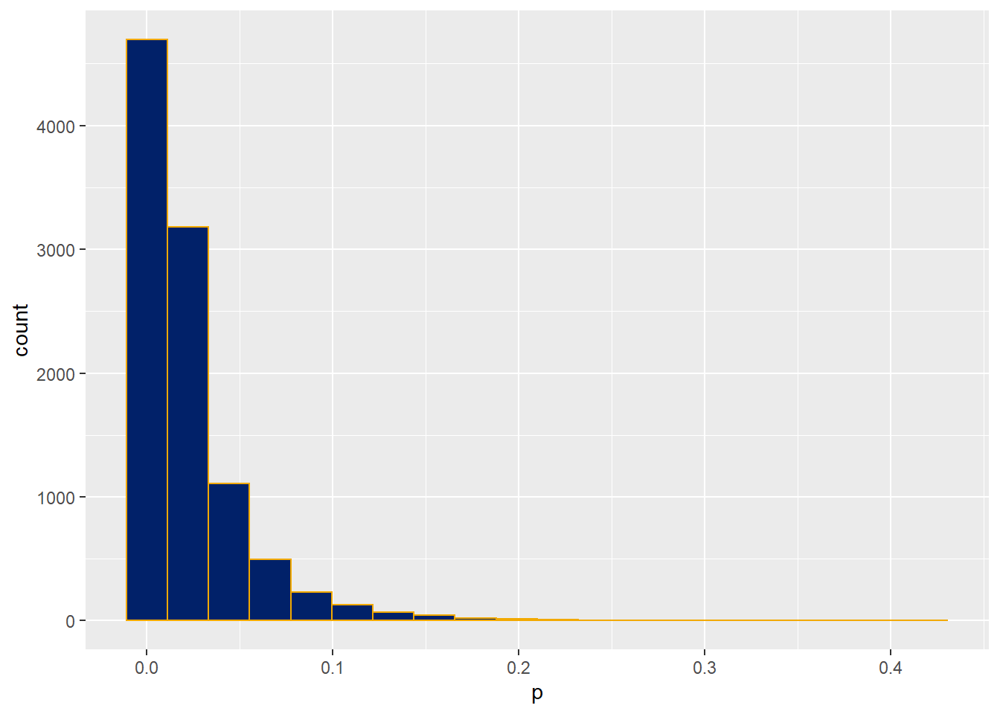

Chapter 24 Statistical design of t-tests
library(datapasta)
library(tidyverse)24.1 About this chapter
This chapter walks through a statistical design for each of three different types of t-test experiments. Each section focuses on illustrating how to plan a sample size by using Monte Carlo simulation.
To do that this method calls on the researcher to make decisions about several statistical issues in advance of running the experiment:
- Explicitly define the dependent and independent variables
- Define the properties of the dependent variable
- Declare a scientifically-meaningful effect size
- Declare tolerance for error
- Determine an appropriate sample size
Which is why I call this “statistical design,” if that is not obvious.
The huge advantage of statistical design is the thinking-through of the problem with only cognitive investment. We get a well-designed experiment out of it. We get a sense of whether running that test is worth it. We might even detect flaws before it is two late…before real-life time and treasure has been spent on the experiment.
To illustrate how existing data is used to define the properties of the dependent variable we use information in a mouse diabetes study conducted by the Jackson Labs in the examples below.
24.2 Overview of the Monte Carlo
In statistics, Monte Carlo is just jargon for a repetitive simulation. All the cool people do Monte Carlo these days, but it has been around forever.
In just a few minutes we can simulate thousands of experiments. In real life any one of these experiments might take weeks or months to conduct.
A Monte Carlo t-test is therefore simply a repetitive simulation a random sample and statistical testing performed on it. In one cycle a random sample is generated, a t-test is performed, and in our examples below, a p-value is extracted from the output.
Hundreds or thousands of these cycles are run for a given simulation. The long-run success of an experiment based upon a set of assumptions is calculated.
The most practical use for the Monte Carlo is to determine the sample size for an experiment with the technique.
The fraction of p-values from those tests that are less than our chosen type1 error threshold serves as the experimental power. The script can be run on range of sample sizes to hone in on the sample size that best yields an acceptable experimental power.
Tweaking the parameter arguments of the functions can generate random replicate values that closely approximate what are likely to be collected in a real life experiment.
The key distinction between real life and simulated samples is that the true parameters of the real life population to be sampled are unknown. In the simulation we pretend as if these population parameters are known and then code them into the function.
Statistical design using Monte Carlo helps the researcher plan an experiment explicitly, to visualize the outcome, and to even think about any thing they’ve missed. Ultimately it can translate to saved time and cost.
24.2.1 Data simulation
In the cases below we will use the rnorm function to generate sample replicates.
We should simulate the type of data we expect the real-life experiment to generate.
For example, when expecting skewed data, lognormal shaped data can be simulated using the rlnorm function. If we expect unequal variances, we can simulate groups that have unequal variances with rnorm or even with rlnorm. We can even use this technique to simulate ordered and sorted data and see how well the t-test performs on that.
24.2.2 The test
A t-test is configured to test each simulated sample. We could collect any test parameter we wished from that t-test, but for the analyses below we’ll just capture the p-values.
When testing at a 95% confidence level, a p-value less than 0.05 would be counted as a “hit” indicative of a ‘positive’ treatment effect. You can adjust your confidence level and hit threshold to whatever value you wish.
Cycles of random sampling, t-testing, and p-value collection is repeated anywhere from 100 to 1000 times or more. The number of ‘hits’ relative to the number of simulated tests is the power of the test.
How many cycles to run? It depends upon how accurate you’d like your power estimate to be. Reliable estimates can be had with only a few hundred simulations. More simulations will be more accurate.
24.3 Changing Sample Size
The examples below are designed for running chunk by chunk, then changing n, then re-running chunk by chunk.
That’s a bit clunky, but their purpose here is to illustrate the modular structure of a Monte Carlo. My t.pwr function, a streamlined version of this code which can be applied over a vector of n values, can be seen in the t-test power section of Chapter 23.
After the first run through the chunks, if the power value is not ideal, whether too hi or too low, change the sample size n in the rnorm function. Then re-run all the chunks.
Repeat this until a Monte Carlo simulation run gives you an acceptable fraction of ‘hits’ and power. There’s your sample size.
Importantly, not just \(n\), but any other assumptions or conditions can be changed, too. Need to re-evaluate the predicted standard deviation? Change it! Will the effect size be larger or smaller than you think? Simulate that! Want to compare a one-tailed to a two-tailed hypothesis? Switch it up!
The time to do p-hacking and HARKing is during a Monte Carlo power analysis, before running the real life experiment.
24.4 Diabetes drug scenario
Let’s imagine we have developed a new drug we hope will be useful for treating type II diabetes. Pretend our role is to generate pre-clinical data in support of an FDA application.
The planning for this scenario is based on some mouse phenome data in a diet-induced obesity study using a fancy mouse, which is a common preclinical model for type II diabetes.
24.4.1 What would be a scientifically meaningful response?
Most of the really important effort in a Monte Carlo for t-test power is in figuring out the mean and standard deviations of the population being sampled. These are used to predicted an expected effect size of the treatment or to define a minimally scientifically relevant treatment effect size.
Beyond understanding the relationship of these parameters to data, there isn’t a lot of statistics involved in deciding what would be a meaningful effect size. Because that mostly involves the researcher making scientific judgments.
On the basis of expertise in the field, and familiarity with the preclinical model, we make the judgment that a 50% reduction in blood glucose caused by the drug in this diet-induced obesity model would be a scientifically meaningful outcome.
Therefore, we should design an experiment capable of detecting that 50% effect size.
If we go to Chapter 13 we’ve already compiled the phenome data into a summary format useful for our planning. These data show that under diabetogenic conditions the animals have an average blood glucose of 368 and SD = 119 (mg glucose/dl).
Since this is an exercise in prediction and estimation, we’ll round those values to 370 and 120. Any more precision misses the point of what this prediction hopes to accomplish.
A 50% reduction would therefore yield a target glucose value of about 185 mg/dl.
Finally, we’d like to run the real life experiments at 90% power. Why? Let’s imagine that these are a pretty important test: they represent a “go” vs “no go” inflection point for a novel drug candidate. When the stakes are higher the experimental test should be more severe.
Therefore, we’ll run through the code chunks, changing sample size each time, until they return a power value of about 90%.
24.5 One sample t-test Monte Carlo
In this single arm design, each C57Bl/6J mouse enrolled in an diabetogenic protocol would receive the drug treatment. Blood glucose levels are taken once, at the end of a preset drug treatment period.
The statistical test evaluates the null hypothesis that mean blood glucose with drug treatment is the same as the mean blood glucose in animals that undergo the diabetogenic protocol.
There is no formal placebo control group.
That may shock someone used to having control groups.
When we have strong experience measuring diabetic blood glucose in this specific model this can be a good design. For example, we have performed lot’s of control group measurements in the past. So many that we have with high confidence in that this sample would, on average, have the value we set for \(\mu\) in this test. This can be a useful experimental design particularly when the cost for securing a control group is high, such as when non-human primates are involved.
24.5.1 Step 1
Initialize the sampling function by entering these mean and sd parameter estimates for the expected values of the new drug.
The sd estimate is a judgment call to think through and to model out. The entry below is conservative. It assumes the drug-treated group has the same sd as an untreated group. The Jaxwest7 data suggest a lower sd might happen with drug (the sd was 80 for the rosiglitazone group vs 120 for the control group).
Also enter an estimate for the theoretical mean of the population it will be evaluated against. Finally, enter a best guess value for the sample size of the drug-treated group. We’ll come back to change this \(n\) to hone in on the right power.
meanDrug <- 185
sdDrug <- 120
muCon <- 370
nDrug <- 324.5.2 Step 2
Initialize with relevant arguments for the t-test function:
alt ="two.sided"
pairing = FALSE
var = FALSE
alpha=0.0524.5.3 Step 3
Declare the number of simulations for the Monte Carlo. Also set up an empty vector in the environment which will be used to capture a p-value each time one is generated by the function.
nSims <- 1000
p <- c()24.5.4 Step 4
Run the simulation function. Notice how with each loop it simulates a new random sample based upon the Step 1 initializer above. This also runs a one-sample t-test on that sample based upon the Step 2 initializer. Next it grabs the p-value from the t.test object. Then it stores the p-value in the formally empty vector from step 3. After it hits the bottom it goes back to the top to run another cycle, only stopping after \(i == nSims\). Therefore, the p-value vector grows with each loop.
for(i in 1:nSims){
x<-rnorm(n = nDrug,
mean = meanDrug,
sd = sdDrug)
z<-t.test(x,
alternative = alt,
paired = pairing,
mu=muCon,
var.equal = var,
conf.level = 1-alpha)
p[i]<-z$p.value #get the p-value and store it
}24.5.5 Step 5
Calculate and show “hits” and power. A “hit” is a simulation with a p-value < 0.05. Power is the fraction of all simulations that meet this hit critria.
# the output
hits <- length(which(p < alpha)); paste("hits=", hits)## [1] "hits= 304"power <- hits/nSims; paste("power=", power)## [1] "power= 0.304"24.5.6 Step 6
Visualize the p-value output with a histogram, with Emory colors of course. Because it’s pretty.
#now plot the histogram
ggplot(data.frame(p))+
geom_histogram(aes(p),
color="#012169",
fill="#f2a900",
binwidth=1/100)+
scale_x_continuous(breaks = seq(0, 1, 0.05))
24.5.7 Step 7
Is the power too low or high? Go back top to change the sample size.
The returned power for the estimates above should be about 40%. That’s a bit lower than a power of 90%, which we’d like here. Change the value of the nDrug term in the Step 1 initializer to a higher sample size, before re-running all the code chunks. Iterate until a power of ~90% is achieved.
Why 90%? That’s both a scientific and strategic call for this case. In this instance a positive result will have important implications for committing further to a costly drug development process. For that reason, the study should be run at a higher power than what might be chosen for a test with less riding upon it.
Next steps: Now is the time to think about changing all of the other parameters. Is rnorm the right distribution to model the sampled population? Are the mean and sd parameters reasonable? Should I consider a smaller effect size? Confidence level? Alternative?
The Monte Carlo is useful to test out a number of different scenarios.
Once we are satisfied we have the right experimental design (sample size, predicted effect size, power, hypothesis and confidence level), we write all of these choices down in our notebook…or register the study online.
Save the power script for record keeping or to share with collaborators or with a consulting statistician. Add the script as a supplement to a manuscript and point to it by describing in methods how sample sizes were chosen.
24.6 Unpaired t-test Monte Carlo
This is an alternative experimental design to the one above.
This design involves two groups of animals. All animals would be subjected to the diabetes-inducing diet. In the control arm, the group would receive a placebo. In the experimental arm, the group would receive the new drug. Each animal would be assumed as statistically independent of every other animal.
The objective is to test the null hypothesis that the means of the blood glucose concentrations do not differ between the two groups.
24.6.1 Step 1
Let’s call the “A” group the placebo, and the “B” group the drug treated. We’ll use standard deviation and the mean estimates for blood glucose levels as described above. We’ll design for equal sample sizes, though this test can tolerate differences.
#Sampled population paramemters
# sample A placebo
meanA <- 380
sdA <- 120
nA <- 5
# sample B new drug
meanB <- 190
sdB <- 120
nB <- 524.6.2 Step 2
Set the t-test function arguments as initializers, rather than down in the loop function, so they are easy to read and to modify.
#t-test function arguments
alt<- "two.sided"
pairing <- FALSE
var <- TRUE
alpha <- 0.0524.6.3 Step 3
Declare the number of simulations. The larger the number of simulations, the more accurate will be the power calculation. Also set up an empty vector for the following function to fill as it cycles through simulations and generates p-values.
nSims <- 10000 #number of simulated experiments
p <- c()24.6.4 Step 4
Run the simulation function. This for loop will run nSims cycles. In each cycle is simulates both an A group and a B group, which it t-tests, and then the p-value of that test is collected.
# the monte carlo function
for(i in 1:nSims){ #for each simulated experiment
x<-rnorm(n = nA, mean = meanA, sd = sdA) #produce n simulated participants
#with mean and SD
y<-rnorm(n = nB, mean = meanB, sd = sdB) #produce n simulated participants
#with mean and SD
z<-t.test(x,y,
alternative = alt,
paired = pairing,
var.equal = var,
conf.level = 1-alpha) #perform the t-test
p[i]<-z$p.value #get the p-value and store it
}24.6.5 Step 5
Print out the power, which is the number of “significant” results (hits) divided by the total number of simulations.
# the output
hits <- length(which(p < alpha)); paste("hits=", hits)## [1] "hits= 5919"power <- hits/nSims; paste("power=", power)## [1] "power= 0.5919"24.6.6 Step 6
Plot out the distribution of p-values.
#now plot the histogram
ggplot(data.frame(p))+
geom_histogram(aes(p),
color="#f2a900",
fill="#012169",
bins=20)
Figure 24.1: P-value distribution of an unpaired t-test Monte Carlo power analysis.
24.6.7 Step 7
This configuration with a sample size of 5 in each group is a bit underpowered. Adjust these sample sizes to derive a power of about 90%.
Also experiment with adjusting other features of the test. What happens if the SD for the drug-treated group is lower? What about a one-tailed hypothesis instead of a two-sided? Monte Carlo is the time for p-hacking and harking.
The Monte Carlo is useful to test out a number of different scenarios.
Once we are satisfied we have the right experimental design, we write all of these joices down in our notebook…or register the study online. Save the power script for record keeping or to share with collaborators or with a consulting statistician.
24.7 Paired t-test Monte Carlo
Paired experimental designs tend to be very efficient because they take advantage of the intrinsic relationships between measurements derived from a common replicate.
For example, individuals may differ a lot in their absolute blood glucose concentrations, but the proportional change due to a drug treatment from one subject to another might be fairly consistent.
In a paired design glucose is measured twice in each subject: after a placebo and once again after drug treatment. The important response variable per replicate is the difference between these two measurements. Given several independent replicates, the paired t-test challenges the null hypothesis that the mean change in blood glucose caused by the drug is zero.
24.7.1 Step 1
Estimating distribution parameters for groups and deciding upon a minimal valid effect size for a paired experiment is similiar to that for an unpaired test and one-sample tests, but with one crucial distinction.
The power in paired experiments rests in the fact that the two intrinsically-linked measurements are correlated.
When simulating data for a paired design accounting for the expected correlation between the response values better mimics the instrinsic relationship between measurements.
Deriving a correlation coefficient to use for these simulations is best accomplished on the basis of some pre-existing data.
We can use the serial glucose measurements from individual subjects in the Jaxwest7 data set to extract this important information.
There are two daily blood glucose measurements taken on days 1, 3, 5, 7, 9, 11 and 12 of a study, from each of 16 different subjects. On each day there are two paired measures from each of 16 independent replicate measurements are taken.
Across the blood collections we expect to see high correlation within the replicates. In other words, we would expect that animals with high values should be consistently high across the study period, and animals with low values should be consistently low across the same time frame.
#Copying cells F14:S32 of the Jaxwest7 table using datapasta
#the value at F21 was imputed as the average of its row before pasting
#colnames a=am, p=pm
bloodGlucose <- data.frame(
day01a = c(136L, 345L, 190L, 434L, 424L, 170L, 487L, 218L, 179L, 260L,
115L, 526L, 325L, 329L, 230L, 204L),
day01p = c(270L, 518L, 301L, 504L, 486L, 208L, 449L, 273L, 184L, 381L,
191L, 517L, 252L, 296L, 414L, 120L),
day03a = c(162L, 429L, 311L, 453L, 447L, 134L, 525L, 254L, 124L, 174L,
132L, 465L, 203L, 212L, 408L, 138L),
day03p = c(165L, 413L, 361L, 392L, 417L, 129L, 419L, 265L, 107L, 140L,
132L, 394L, 158L, 159L, 179L, 139L),
day05a = c(192L, 456L, 398L, 350L, 496L, 147L, 437L, 338L, 108L, 132L,
169L, 310L, 135L, 156L, 432L, 157L),
day05p = c(397L, 487L, 465L, 400L, 484L, 141L, 476L, 386L, 149L, 138L,
158L, 269L, 162L, 200L, 288L, 122L),
day07a = c(172L, 468L, 388L, 458L, 468L, 241L, 525L, 287L, 142L, 164L,
129L, 213L, 164L, 139L, 163L, 163L),
day07p = c(148L, 419L, 392L, 387L, 423L, 128L, 499L, 236L, 143L, 137L,
120L, 185L, 181L, 143L, 240L, 168L),
day09a = c(291L, 507L, 453L, 342L, 472L, 162L, 516L, 347L, 112L, 122L,
122L, 145L, 150L, 164L, 185L, 164L),
day09p = c(239L, 559L, 421L, 368L, 507L, 163L, 485L, 235L, 233L, 140L,
157L, 201L, 177L, 150L, 208L, 128L),
day11a = c(192L, 420L, 355L, 355L, 458L, 222L, 472L, 432L, 113L, 102L,
94L, 131L, 162L, 119L, 138L, 129L),
day11p = c(172L, 415L, 381L, 429L, 456L, 438L, 535L, 450L, 137L, 174L,
141L, 258L, 192L, 193L, 208L, 218L),
day12a = c(235L, 511L, 394L, 373L, 519L, 307L, 500L, 509L, 106L, 120L,
120L, 114L, 170L, 148L, 153L, 135L),
day12p = c(153L, 464L, 444L, 501L, 570L, 252L, 497L, 326L, 150L, 135L,
166L, 160L, 162L, 188L, 140L, 182L)
)We calculate the correlation between any two daily sets of values. In fact, we can calculate the correlation between all possible pairs of daily values. This leaves us with a large number of unique correlation coefficients. An overall average correlation coefficient will be used in the Monte Carlo function.
#create a full correlation matrix
cormat <- cor(bloodGlucose)
#remove lower half of matrix due to duplication
cormat[lower.tri(cormat)] <- NA
#remove matrix diagonal as uninformative
cormat[cormat==1.0000000] <- NAHow correlated are the glucose levels in the Jaxwest7 data set?
#calculate the average correlation coefficient among all the correlations in the Jaxwest7 glucose level data set
mean(cormat, na.rm=T)## [1] 0.7665732#phew!What does this value mean and how to use it in a Monte Carlo?
First, “it can be shown” that when the value of the correlation coefficient between the variables \(X,Y\) is \(r\), then the relationship between each pair of \(x_i, y_i\) values is
\[\begin{equation} y_i=x_i\times r+y_i\sqrt{1-r^2} \tag{24.1} \end{equation}\]
Intuitively, this should make sense. When \(r=0\), then \(x_i\) does not predict \(y_i\), thus \(y_i=y_i\). When \(r=1\) the prediction is perfect so \(y_i=x_i\).
Oh what the hell, here’s a proof:
x <- rnorm(100000, 0, 1)
y <- rnorm(100000, 1, 1)
paste("Random x and y are uncorrelated: r=", cor(x, y))## [1] "Random x and y are uncorrelated: r= 0.00029079959446801"r <- 0.76
yc <- x*r+y*sqrt(1-r^2)
paste("Now they are: r=", cor(x, yc) )## [1] "Now they are: r= 0.761306797196214"The average correlation coefficiennt from the Jaxwest7 data set means that within each subject in our experiment the expected correlation between pre-drug glucose concentrations and post-drug glucose concentrations is about 0.7666.
We take advantage of this deriving this estimate to simulate a group values that will be more life-like.
24.7.2 Step 2
Initialize the Monte Carlo with estimates for the measurement values. We start with the mean and sd values for the pre-drug blood glucose measurements. Their estimates are derived from the placebo group in the Jaxwest7 data set, rounded to 380 and 120, respectively.
A scientifically-meaningful effect of the drug would be a 50% reduction in glucose. We want to set up an experiment that can detect that effect.
The expected correlation between pairs of measures is 0.7666, rounded to 0.75.
#Sampled population paramemters
# pre-drug measurements
mean1 <- 185
sd1 <- 120
# post-drug response
mean2 <- 380
sd2 <- 120
r <- 0.75
k <- sqrt(1-r^2)
# number of paired measures
pairs <- 424.7.3 Step 3
This step sets the arguments in the t-test function. Even though we predict a reduction in glucose, we’ll test this as a two-tailed hypothesis. It’s a little more stringent.
The t.test function needs to be set for paired=TRUE so that it runs the appropriate test.
#t-test function arguments
alt<- "two.sided"
pairing <- TRUE
var <- TRUE
alpha <- 0.0524.8 Step 4
Declare the number of simulations. The larger the number of simulations, the more accurate will be the power calculation.
Also set up an empty vector to fill with p-values, as they are generated each cycle.
nSims <- 10000 #number of simulated experiments
p <- c()24.8.1 Step 5
Re-simulate and re-run the t-test nSims times.
The y1 and y2 vectors are each a set of randomly generated values for the post- and pre-drug measurements, respectively. They are initially uncorrelated. But in a second step the y2 vector is corrected by the relatonship in Equation (24.1) aboves so that cor(y1, y2)=r.
for(i in 1:nSims){ #for each simulated experiment
y1<-rnorm(n = pairs, mean = mean1, sd = sd1) #produce n simulated participants
#with mean and SD
y2<-rnorm(n = pairs, mean = mean2, sd = sd2) #produce n simulated participants
#with mean and SD
#correlated
y2 <- r*y1+k*y2
z<-t.test(y1,y2,
alternative=alt,
paired=pairing,
var.equal=var,
conf.level=1-alpha) #perform the t-test
p[i]<-z$p.value #get the p-value and store it
}24.8.2 Step 6
Calculate power as the fraction of p-values less than 0.05. 1@ref(### Step 5)
# the output
hits <- length(which(p < alpha)); hits## [1] 8793power <- hits/nSims; power## [1] 0.8793Visualize the p-value distribution.
#now plot the histogram
ggplot(data.frame(p))+
geom_histogram(aes(p),
color="#f2a900",
fill="#012169",
bins=20)
24.8.3 Step 7
Once the sample size is dialed in it is useful to re-evaluate assumptions about the effect size and the parameters of the sample. The analysis can also be re-run by changing the hypothesis, or the confidence level.
The Monte Carlo is useful to test out a number of different scenarios.
Once we are satisfied we have the right experimental design, we write all of these joices down in our notebook…or register the study online. Save the power script for record keeping or to share with collaborators or with a consulting statistician.
24.9 Comparison to pwr tests
It’s natural not to “trust” Monte Carlo output when you don’t fully understand the details.
library(pwr)
pwr.t.test(n=8, d=1.58, sig.level=0.05, type="two.sample", alternative="two.sided")##
## Two-sample t test power calculation
##
## n = 8
## d = 1.58
## sig.level = 0.05
## power = 0.8358049
## alternative = two.sided
##
## NOTE: n is number in *each* grouppwr.t.test(n=6, d=1.58, sig.level=0.05, type="paired", alternative="two.sided")##
## Paired t test power calculation
##
## n = 6
## d = 1.58
## sig.level = 0.05
## power = 0.867253
## alternative = two.sided
##
## NOTE: n is number of *pairs*24.10 Summary
Monte Carlo methods are a great way to conduct a statistical design for an experiment. Writing a Monte Carlo method is also a great way to learn how to write custom functions. The result, which is either the statistical power of the sampling or a sample size necessary to achieve a specific level of power, should give results similar to other power functions in R.